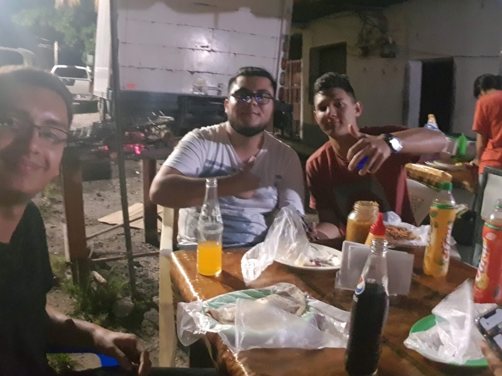

Steven Pacheco Portuguez
stevenpach10@gmail.com
Lab01 #VeranoWEB18
Mi nombre es Steven Pacheco Portuguez, soy estudiante de Ingeniería en Computación en el Instituto Tecnológico de Costa Rica. Actualmente me encuentro cursando el verano 2018-2019 en Introducción al Desarrollo de Aplicaciones Web. Vivo cerca de la zona de Paraíso de Cartago, mis estudios de primaria fueron en la escuela Rescate de Ujarras, posteriormente me uni al Colegio Técnico Profesional de Santa Lucía, actualmente vivo con mis dos padres y mi hermano. EL nombre de mi madre es María Eugenia Portuguez Sanchez y el de mi padre es Miguel Angel Paheco Ramírez, mi hermano se llama Freyzer Fabían Pacheco Portuguez.Nací el 11 de diciembre de 1996, tengo una estatura de 1 metro 83 centímetros, tengo ojos cafes, cabello castaño, me gusta mucho practicar futbol soy seguidor del equipo de Liga Deportiva Alajuelense, me gusta tocar guitarra o bajo cuanto tengo tiempos libres del semestre y también me gusta leer libros sobre todo de realidad mundial o fantasía como del video juego World Of Warcraft

Estudios
Instituto Tecnologico de Costa Rica
Hasta el momento parte de mis experiencias dentro del TEC han sido de participar como tutor del curso Estructuras de Datos durante el periodo del 2017 y el I semestre del 2018. También apartir del presente año formo parte del grupo de investigación AVIB, apartir del II semestre participo como asistente en los cursos Bases de Datos II y Estructuras de Datos con el profesor Rodrigo Nuñez.
Entre en el año 2016, mi carnet es 2016125971 estudio Ingeniería en Computación en la sede Central, bueno anecdotas son muchas la primera que me marco fue en el I semestre, quizas contaba con una mala distribución del tiempo o malas bases pero reprobé el curso de Matemática General, desde ahí me propuse como mete no volver a reprobar un curso y dar siempre el máximo esfuerzo, y hasta el momento así ha sido ojala no tenga que hacer una excepción este semestre que viene o verano...
Que problemilla con los profes verdad que debería o que no debería decir. Lo importantes es que han sido unas personas de una calidad impresionante todos dominan muy bien los contenidos y sin duda ofrecen una educación de alta calidad. Uno de los recuerdos más recientes lo tengo con el profesor Esteban, justamente en el semestre pasado en la participación de CONESCAPAN 2018, cuando visitamos las Ruinas Mayas de Copán que el profe se iba a sentar en unas esculturas de más de 2000 años.
Por dicha me llevo con todos los de la generación tenemos buenas relaciones pero con los que más me he involucrado en la U son el buen Toñito y el buen Pablito(profe un día le cuento un secreto de el), lastimosamente siempre tengo que estarlos llevando en los cursos para que pasen pero igual asi los quiero.
Este es el link del blog en el cual debemos realizar los apuntes semanales de la materia vista en clase.
CLICK ACÁColegio Tecnico Profesional Santa Lucía
Aparte de obtener mi bachillerato en educación media en el colegio, obtuve el título de técnico medio en Informatica Empresarial
Hobbies
Musica
Me gusta mucho la musíca, de forma general me gustan mucho las que se realizan con una armonía de instrumentos, no tengo nada encontra de la musíca realizada con sintetizadores, solo considero que orquestar diferentes personas con diferetes instrumentos es algo de lo que hace bello a la musíca
Entre los géneros que más me gustan estan todos los derivados del rock como Led Zeppelin, The Doors, Black Sabbath entre otros. En musica más popular me gusta mucho el Reggae cuenta con una capacidad de calmar a las personas.
Videojuegos
En la actulidad por motivos de estudio no tengo mucho tiempo para dedicarme algún video juego, sin embargo trato de no perder el hilo de las historias de World Of Warcraft, siempre lo considere un mundo facinante de mucha diversidad y muchas lineas argumentales, para comprender más de este mundo consegui varios libros que me dedico a coleccionarlos.
Bonsai
Desde que entre a la universidad en el año 2016, me gusta mucho el tema de los Bonsai, actualmente me dedico a cuidar uno, me gusta ver como con mucho tiempo van creciendo y se les va dando forma, nunca los resultados son inmediatos entonces son como ese tipo de analogías que al menos a mi dan una manera de percibir la vida diferente.